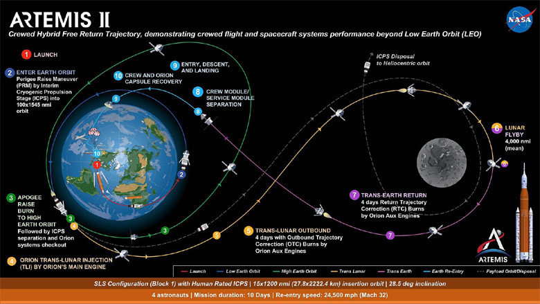
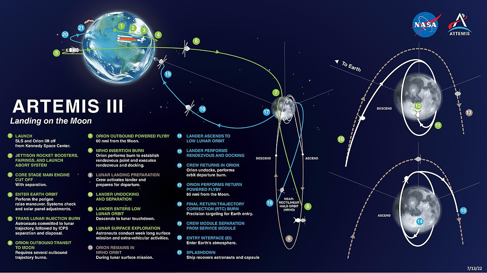

objetivo
O Projeto Artemis, liderado pela NASA, tem como objetivo principal retornar seres humanos à Lua e estabelecer uma presença sustentável lá, abrindo caminho para futuras missões tripuladas a Marte. Aqui estão as principais informações do Projeto Artemis
como funciona?
O Projeto Artemis funciona através de uma série de missões interconectadas que envolvem a colaboração de diversas entidades, incluindo a NASA, agências espaciais internacionais empresas privadas. Aqui estão os principais componentes e como eles se interconectam para alcançar os objetivos do projeto:
Missões Artemis
Artemis I
Uma missão não tripulada que serviu como um teste inicial do Space Launch System (SLS) e da cápsula Orion. Seu objetivo foi orbitar a Lua e retornar à Terra, validando sistemas críticos.
Artemis II
Será a primeira missão tripulada do programa, planejada para voar ao redor da Lua e retornar, testando os sistemas de suporte à vida e outros componentes necessários para missões tripuladas.
Artemis III
A missão que levará astronautas de volta à superfície lunar, prevista para 2025. Esta missão pousará no polo sul da Lua, onde os astronautas conduzirão pesquisas científicas e explorarão o ambiente lunar.
2. Componentes Principais
Space Launch System (SLS)
Um foguete poderoso desenvolvido para enviar a cápsula Orion e outros componentes de missões além da órbita baixa da Terra, com a capacidade de levar grandes cargas à Lua.
Cápsula Orion
A espaçonave projetada para transportar astronautas da Terra à órbita lunar e de volta. Orion inclui sistemas avançados de suporte à vida, navegação e comunicação.
Gateway Lunar
Uma estação espacial modular que será colocada na órbita lunar. Servirá como um ponto de apoio para missões à superfície da Lua e futuras missões a Marte. O Gateway permitirá estadias mais longas na Lua e facilitará operações de pouso e decolagem.
Human Landing System (HLS)
Veículos de pouso lunar desenvolvidos em parceria com empresas privadas para levar astronautas da órbita lunar até a superfície da Lua e vice-versa.
3 Tecnologia e Inovação
Exploração Sustentável
Desenvolvimento de tecnologias para utilizar recursos lunares (como a extração de água) e para suportar estadias prolongadas na superfície lunar.
Novos Sistemas de Mobilidade
Incluindo rovers pressurizados para exploração mais eficiente da superfície lunar.
4 Parcerias e Colaborações
Comerciais
Empresas privadas como SpaceX, Blue Origin e outras estão desenvolvendo componentes críticos, incluindo o Human Landing System.
Internacionais
A cooperação com agências espaciais de outros países, como a ESA (Agência Espacial Europeia), JAXA (Agência de Exploração Aeroespacial do Japão) e CSA (Agência Espacial Canadense), que contribuem com módulos do Gateway, tecnologia e pesquisa científica.
5 Objetivos de Longo Prazo
Sustentabilidade
Estabelecer uma presença humana sustentável na Lua, com infraestrutura que permita a realização contínua de missões científicas a exploração de recursos.
Preparação para Marte
Testar e refinar tecnologias e sistemas necessários para missões tripuladas a Marte, incluindo sistemas de suporte à vida de longa duração, proteção contra radiação e habitats autossustentáveis.
dt/duração
| artemis 1 | artemes 2 | artemis 3 |
|---|---|---|
| 16 de nov. de 2022 – 11 de dez. de 2022 | setembro de 2025 | setembro de 2026 |
| 25 dias, 10 horas | 10 dias | ~30 dias |
jamily vieira gonçalves- 3A info